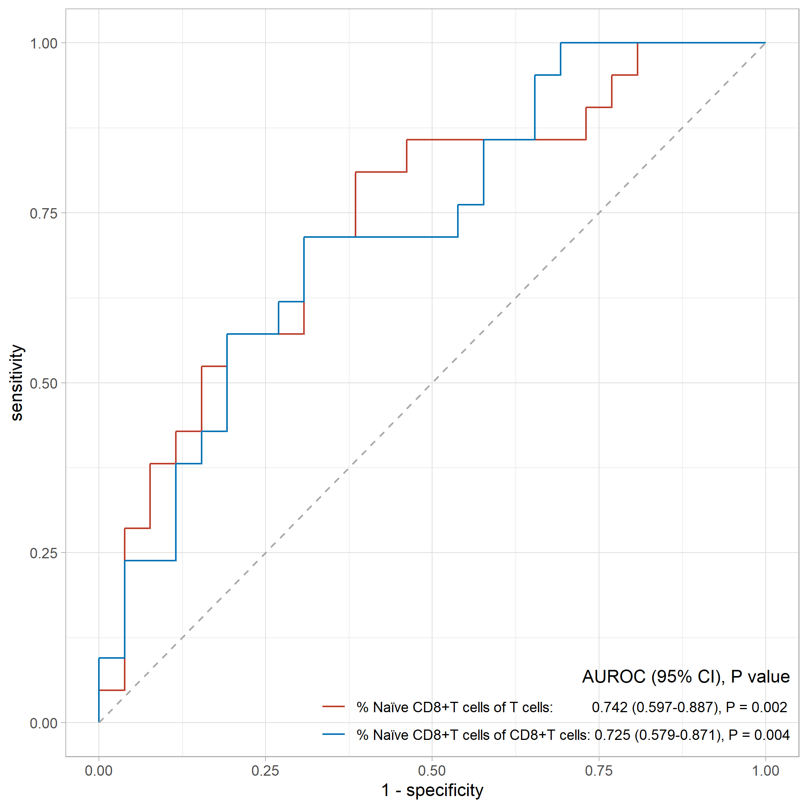
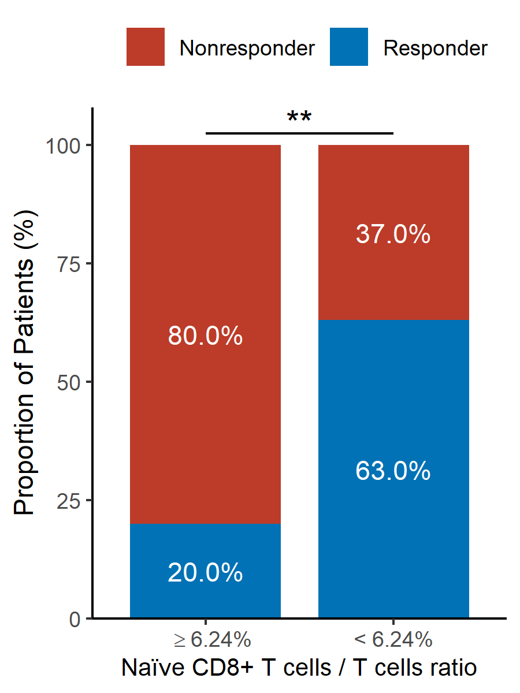
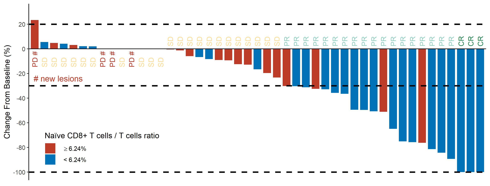

openxlsx::convertToDate(42705)
[1]"2016-12-01"# 生存数据示例
library(survival)
library(survminer)
OS <- Surv(time = df$OS, event = df$OS_status)
RFS <- Surv(time = df$RFS, event = df$RFS_status)library(survival)
ggsurvplot(fit = survfit(OS ~ 1, data = df),
palette = "jco", # or palette = c("#E7B800", "#2E9FDF"),
# Allowed values are one of c("top", "bottom", "left", "right", "none").
# Legend position can be also specified using a numeric vector c(x, y).
# In this case it is possible to position the legend inside the plotting area.
# x and y are the coordinates of the legend box. Their values should be between 0 and 1.
legend = "none",
legend.title = "group",
legend.labs = c("DCP responder", "DCP nonresponder"),
pval = T, # 也可以直接指定要显示的p value
# numeric vector, of length 2, specifying the x and y coordinates of the p-value.
# Default values are NULL.
pval.coord = c(50, 1),
conf.int = F,
surv.median.line = "hv",
# title = "Progress-Free Survival",
ylab = "Overall Survival",
xlab = "Months",
# axes.offset = F, # Default is TRUE. If FALSE, set the plot axes to start at the origin.
ylim = c(0,1),
break.y.by = 0.2,
# surv.scale = "percent",
xlim = c(0, 60),
break.x.by = 12,
# xscale = "d_m", # will transform labels from days to months
risk.table = T,
risk.table.title = "Number at Risk",
risk.table.y.text = F,
risk.table.y.text.col = T,
risk.table.height = 0.15,
ggtheme = theme_survminer(base_size = 6),
tables.theme = theme_cleantable(base_size = 6))uni_logrank <- function(gvar, surv, df) {
temp <- survdiff(as.formula(paste0(surv, " ~ ", gvar)),
data = df)
p.value <- round(broom::glance(temp)$p.value, 3)
return(p.value)
}
# OS
uni_logrank_batch_OS <- sapply(vars, uni_logrank, "OS", df)
uni_logrank_batch_OS[uni_logrank_batch_OS < 0.05]
# RFS
uni_logrank_batch_RFS <- sapply(vars, uni_logrank, "RFS", df)
uni_logrank_batch_RFS[uni_logrank_batch_RFS < 0.05]library(dplyr)
library(ggplot2)
library(ggsci)
# library(showtext)
#
# font_add("yahei","msyh.ttc")
# showtext_auto(enable = TRUE)
# ggroc()的用法在为知笔记
ggroc(list(totalT = roc_naiveCD8T_totalT,
CD8T = roc_naiveCD8T_CD8T),
legacy.axes = TRUE) +
geom_segment(aes(x = 0, xend = 1, y = 0, yend = 1), # 添加auc = 0.5的线
color = "darkgrey", linetype = "dashed") +
scale_color_nejm(labels = c("% Naïve CD8+T cells of T cells: 0.742 (0.597-0.887), P = 0.002",
"% Naïve CD8+T cells of CD8+T cells: 0.725 (0.579-0.871), P = 0.004")) +
theme_light() +
theme(legend.position = c(1,0),
legend.justification = c(1,0),
legend.title.align = 1,
legend.background = element_blank(),
legend.key = element_blank()) +
guides(color = guide_legend(title = "AUROC (95% CI), P value"))
ggsave("figure/roc.pdf",
width = 7, height = 7, units = "in")
# 导入数据 dat_waterfall_chart
load("data/dat_waterfall_chart.RData")
head(dat_waterfall_chart)“≥”在图中的写法参考自stackoverflow
suppressMessages(library(dplyr))
library(ggplot2)
library(ggsci)
dat_waterfall_chart <- dat_waterfall_chart %>%
mutate(group_response = ifelse(tumor.response %in% c("CR", "PR"),
"Responsder", "Nonresponder"))
prop.table(table(dat_waterfall_chart$group_response, dat_waterfall_chart$group_naiveCD8T_totalT,
dnn = list("response", "totalT")),
margin = 2)
dat_bar <- tibble(response = rep(c("Nonresponder", "Responder"), times = 2),
totalT = rep(c("high", "low"), times = 1, each = 2 ),
pct = c(80, 20, 37, 63))
ggplot(dat_bar, aes(x = totalT, y = pct, fill = response)) +
geom_bar(stat = "identity",
width = 0.8) + # 设置条形的宽度和间距 默认值为0.9
scale_y_continuous(expand = c(0, 0), # y轴底部从原点开始 不留空白
name = "Proportion of Patients (%)",
limits = c(0, 108)) + # 为了添加的"*"能够显示完整 扩展y轴范围
scale_x_discrete(labels = c(expression(phantom(x) >= "6.24%"), # "≥"在图中的写法
"< 6.24%"),
name = "Naïve CD8+ T cells / T cells ratio") +
theme_classic() +
theme(legend.position = "top",
legend.background = element_blank(), # 移除图例整体的边框
legend.key = element_blank(), # 移除每个图例项目周围的边框
legend.title = element_blank(),
axis.title.x = element_text(size = 10)) + # 缩小字体 否则导出时字体会溢出
scale_fill_nejm() +
annotate("text", x = 1, y = c(60, 10),
label = c("80.0%", "20.0%"),
color = "white") +
annotate("text", x = 2, y = c(37/2 + 63, 63/2),
label = c("37.0%", "63.0%"),
color = "white") +
annotate("segment", x = 1, xend = 2, y= 102.5, yend = 102.5) +
annotate("text", x = (1+2)/2, y = 105,
label = "**", size = 5)ggsave("figure/Figure_bar_totalT.png",
width = 3, height = 4, units = "in")
# 导入数据 dat_waterfall_chart
load("data/dat_waterfall_chart.RData")
head(dat_waterfall_chart)“≥”在图中的写法参考自stackoverflow
suppressMessages(library(dplyr))
library(ggplot2)
library(ggsci)
ggplot(data = dat_waterfall_chart,
aes(x = No., y = change, fill = group_naiveCD8T_totalT)) +
geom_bar(stat = "identity", position = "identity",
width = 0.8) + # 设置条形的宽度和间距 默认值为0.9
geom_hline(yintercept = 0) +
geom_hline(yintercept = c(-30, 20, -100),
linetype = 2, size = 1.05) +
# geom_text(aes(label = T_response, color = T_response),
# # hjust = -0.2,
# angle = 90) +
annotate("text", x = -Inf, y = -24, hjust = -0.1,
label = "# new lesions",
color = "#BC3C29FF", size = 4.5) +
# 分开添加tumor response的注解
annotate("text", x = 1:14, y = -15, angle = 90, hjust = 0,
label = dat_waterfall_chart %>%
filter(change >= 0) %>%
pull(T_response),
color = dat_waterfall_chart %>%
filter(change >= 0) %>%
pull(colors)) +
annotate("text", x = 15:47, y = 2, angle = 90, hjust = 0,
label = dat_waterfall_chart %>%
filter(change < 0) %>%
pull(T_response),
color = dat_waterfall_chart %>%
filter(change < 0) %>%
pull(colors)) +
scale_y_continuous(limits = c(-100, 30),
breaks = seq(-100, 20, 20),
name = "Change From Baseline (%)") +
theme_classic(base_size = 12) + # 默认字体大小为12
# guides(color = "none") + # 取消映射给color的图例
labs(fill = "Naïve CD8+ T cells / T cells ratio") + # 设置映射给fill的图例标题
theme(legend.position = c(0.16, 0.18),
legend.background = element_blank(), # 移除图例整体的边框
legend.key = element_blank(), # 移除每个图例项目周围的边框
axis.text.x = element_blank(), # 移除x轴标签
axis.title.x = element_blank(), # 移除x轴标题
axis.line.x = element_blank(), # 移除x轴横线
axis.ticks.x = element_blank()) + # 移除x轴刻度线
# scale_color_aaas() +
scale_fill_nejm(labels = c(expression(phantom(x) >= "6.24%"), # "≥"在图中的写法
"< 6.24%"))
# 保存图片
ggsave("figure/Figure_Change_totalT.pdf",
width = 10.5, height = 4, units = "in")
# 本例中用到的颜色
scales::show_col(pal_nejm()(9))
scales::show_col(pal_npg()(9))